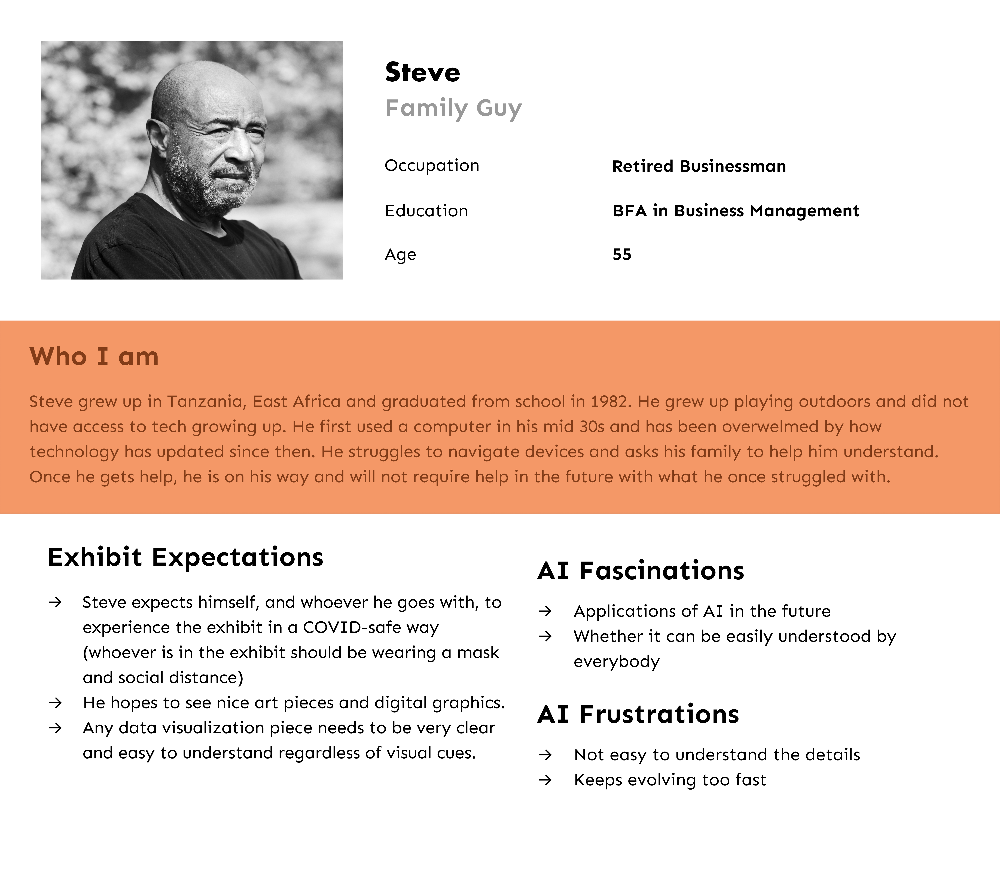
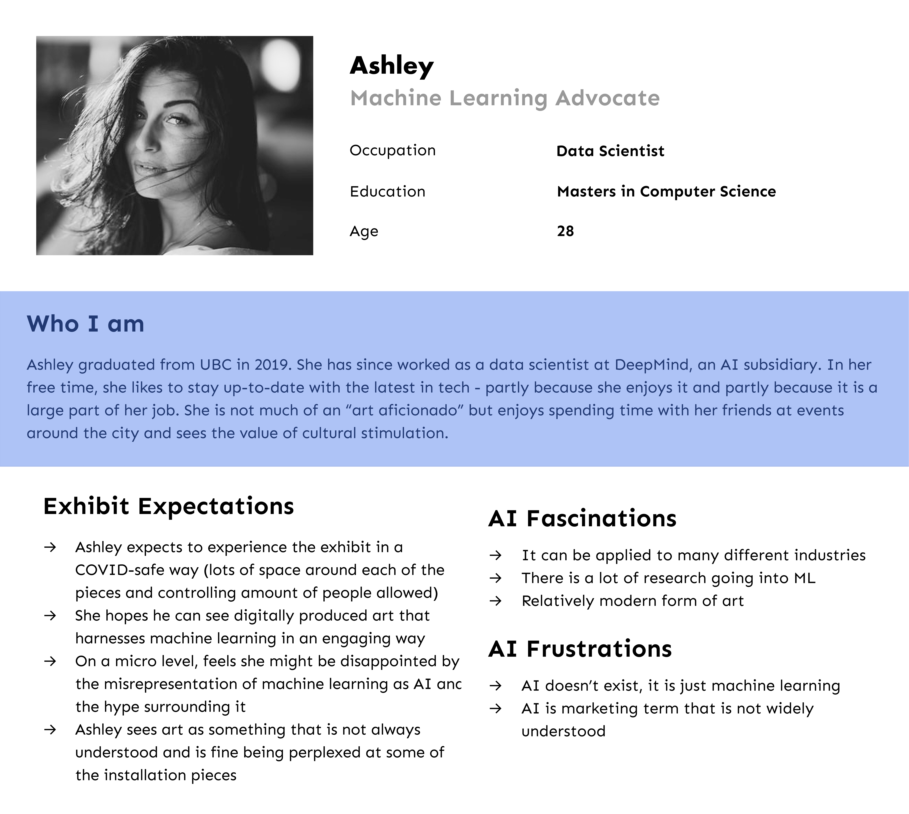
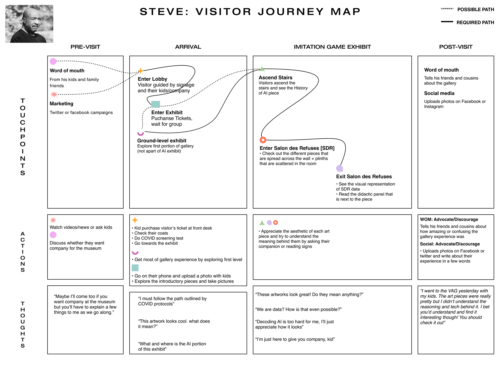
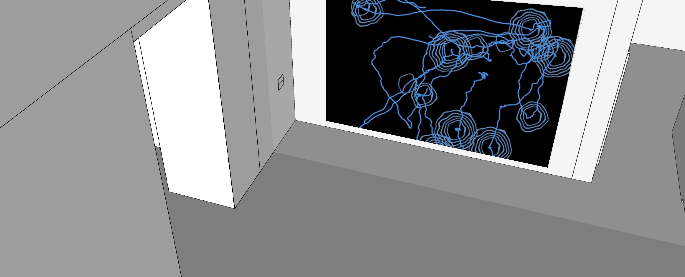

Creepers at Vancouver Art Gallery
Creepers is an AI-art installation awarded the Gerri Sinclair Award for Innovation in Digital Media, featured in the 2021 Imitation Game exhibit at the Vancouver Art Gallery. My team was approached by the head curators to design and implement an installation tracking visitor movements through the exhibit space, using biomimicry-inspired systems to make visitor data visually engaging.
2020 - 2021 · UX and Interaction Designer
Project Management: Jason Elliot, Shruti Sharma
Research: Shruti Sharma
2D Concept Art: Yuri Wu
Development: Cindy Shi



Persona: AI novice

Persona: AI expert


Visitor tracking logic exploration
Time-based interaction study

Final system exploration using biomimicry

Final visual language study

Visitors interacting with Creepers in the gallery